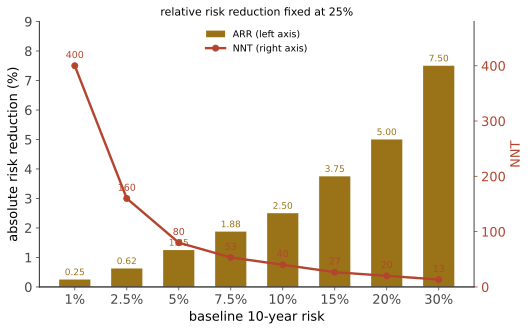

本页目录
循证 II · 效应量：RR、ARR、NNT 与 NNH
这是全站的核心装置页。掌握了这一页，你就能把任何"某疗法降低风险 X%"的说法翻译成"对像我这样的人意味着什么"——而这个翻译过程本身，就是医学新闻与真实临床决策之间的主要落差。
1. 四个数字，一张表
设对照组事件率 \(CER\)、治疗组事件率 \(EER\)：
| 指标 | 定义 | 含义 |
|---|---|---|
| 相对危险度 RR | \(EER / CER\) | 风险变成原来的几倍 |
| 相对危险度降低 RRR | \(1 - RR = (CER-EER)/CER\) | "降低 30%" 通常指这个 |
| 绝对危险度降低 ARR | \(CER - EER\) | 真正的获益幅度 |
| 需治疗人数 NNT | \(1 / ARR\) | 治多少人避免 1 例事件 |
| 需伤害人数 NNH | \(1 / ARI\) | 治多少人造成 1 例危害 |
核心事实：RRR 在不同基线风险下大致稳定，而 ARR 与 NNT 随基线风险剧烈变化。

2. 一个完整算例
他汀用于一级预防（数量级示意）：10 年心血管事件风险 10% 的人群，他汀使相对风险降低约 25%。
- \(CER = 10\%\)，\(EER = 7.5\%\)
- \(ARR = 2.5\%\) → NNT = 40（10 年内治疗 40 人，避免 1 例事件）
同样的药用在 10 年风险 30% 的人身上：\(ARR = 7.5\%\) → NNT = 13。 用在 10 年风险 2.5% 的人身上：\(ARR = 0.625\%\) → NNT = 160。
同一种药、同一个 RRR，NNT 从 13 到 160。 这就是为什么现代指南按总体风险而不是按单个指标（如"胆固醇是否超标"）决定是否用药——第 15 页展开。
再加上 NNH：假设他汀引起肌肉症状的绝对增加约 1%（视人群与定义差异很大），则 NNH ≈ 100。把 NNT 与 NNH 放在一起，"值不值得"才成为一个可讨论的问题，且答案会因人而异——这正是共同决策的技术基础（第 24 页）。
3. 为什么相对风险如此有诱惑力
三方都有动机使用相对指标：药厂（数字更大）、研究者（更容易显著）、媒体（更有冲击力）。实证研究反复显示：同一结果用相对指标呈现时，医生与患者都更倾向于接受该治疗。
一个必须警惕的组合：收益用相对指标、危害用绝对指标。"降低 50% 的卒中风险，严重出血仅增加 0.5%"——这两个数字不可比，必须换算到同一尺度。
本站的规矩：看到相对数字，立刻问"基线是多少"。 拿不到基线风险的报道，信息是不完整的。
4. 其他效应量与它们的换算
比值比 OR：\(\dfrac{\text{odds}_{治}}{\text{odds}_{对照}}\)。病例对照研究只能算 OR；当结局罕见（< 10%）时 \(OR \approx RR\)，结局常见时 OR 会夸大效应——这是解读 logistic 回归结果最常见的错误。
风险比 HR（生存分析）：瞬时风险之比。要点：① HR 假设比例风险（若曲线交叉则 HR 无意义）；② HR = 0.7 不等于"寿命延长 30%"；③ 对免疫治疗这类"长尾"生存曲线，HR 与中位生存期都会误导——🔗 姊妹站第 23 页提到同一问题。替代指标：限制平均生存时间（RMST），可直接解读为"在 5 年内平均多活了几个月"。
连续结局的标准化效应量 \(d\)：\((\bar x_1 - \bar x_2)/SD\)。换算感：\(d = 0.2\) 小、0.5 中、0.8 大——但这套阈值是约定而非自然定律。更好的做法是问"最小临床重要差异（MCID）"：这个量表上变化多少，患者能感觉到？统计显著但小于 MCID 的结果，临床上不重要（🔗 姊妹站第 16、21 页的抗淀粉样药物争议正在此）。
5. 显著性与效应量：五个必须分清的概念
| 概念 | 含义 | 常见误读 |
|---|---|---|
| p 值 | 若原假设为真，观察到至少这么极端数据的概率 | 不是"假设为真的概率"，也不是效应大小 |
| 置信区间 | 与数据相容的效应范围 | 比 p 值信息量大得多，应优先看 |
| 统计显著 | \(p < \alpha\) | 不等于临床重要 |
| 无显著差异 | 未能拒绝原假设 | 不等于"证明无效"——看 CI 是否排除了重要效应 |
| 非劣效 | 差异不超过预设界值 | 界值宽则结论廉价 |
"阴性试验"的正确读法：看置信区间的上限。若 RR 的 95% CI 是 [0.85, 1.15]，那么既没证明有效，也没排除 15% 的获益；若是 [0.97, 1.03]，则可以相当自信地说效应很小。这两种"阴性"完全不同，却常被同等对待。
多重比较：一项试验测 20 个终点，平均有 1 个会在 \(\alpha = 0.05\) 下"显著"。所以必须区分预注册的主要终点与探索性次要终点（第 07、09 页）。
6. 复合终点：一个高频陷阱
复合终点（如"主要不良心血管事件 MACE = 心血管死亡 + 心梗 + 卒中 + 血运重建"）用于提高事件数、缩短试验。问题有三：
- 各成分的重要性差异巨大（死亡 vs 再次住院）；
- 效应常由最不重要、最主观的成分驱动——"血运重建"这类由医生决定的终点尤其容易受未盲影响；
- 报道时只说"复合终点降低 20%"，掩盖了死亡率毫无变化。
读法：永远要求看各成分的分解结果。如果获益全部来自"住院"而硬终点纹丝不动，结论就要打折。
7. 读一条医学新闻的六个问题
把本页收成一件可以立刻用的工具：
- 这是相对还是绝对效应？基线风险多少？
- NNT 是多少？NNH 是多少？
- 终点是硬终点还是替代终点？（第 09 页）
- 对照组是什么？（第 05 页）
- 随访多久？（预防性用药的获益需要时间累积）
- 样本量与置信区间？（是"证明无效"还是"没能证明有效"？）
如果一条报道无法回答其中三条以上，它就不足以支持你改变任何行为。
8. 迁移：效应量思维在你其他工作中的位置
🔗 这一页与你 2026-07 那次预测收网校验是同一套逻辑：当时的关键判断不是"命中率 32.3%"这个数字本身，而是把它对照到随机基线（33.3%）与平凡基线（65.3%）——没有基线的准确率不携带信息，正如没有基线风险的 RRR 不携带信息。
同构还在继续：
- 复合终点的陷阱 = 把多个粒度的命题混在一起统计总命中率，结果被最容易的那类主导；
- "阴性但区间很宽" = 样本不足时的"无预测力"结论要谨慎，要看置信区间而不是点估计（你当时对无重叠子集 27.6%、CI [14.7, 45.7] 的自我纠正正是这个动作）；
- MCID 的类比 = 即使某个信号统计上真实，它是否大到足以改变仓位或决策？
下一页：偏倚目录——效应量算得再准，如果研究本身有系统性误差，一切都白搭。